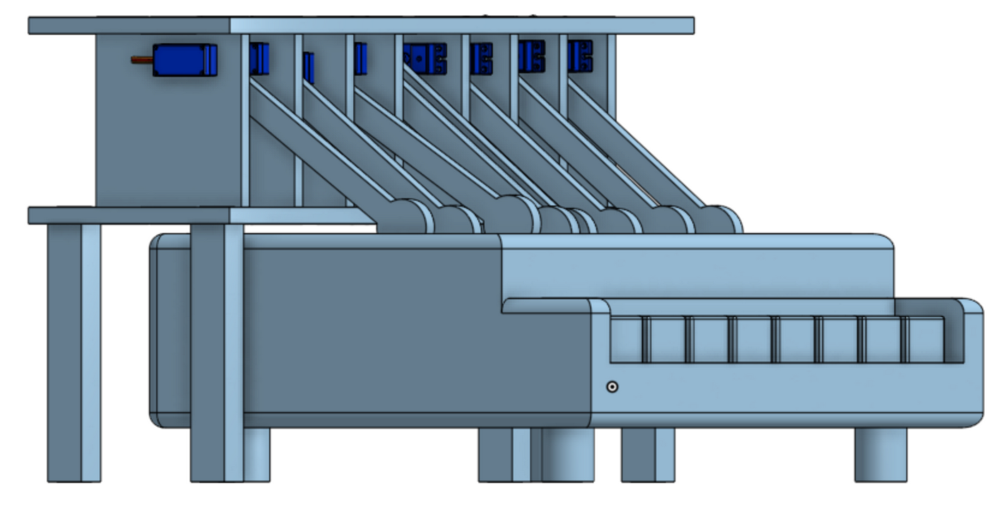
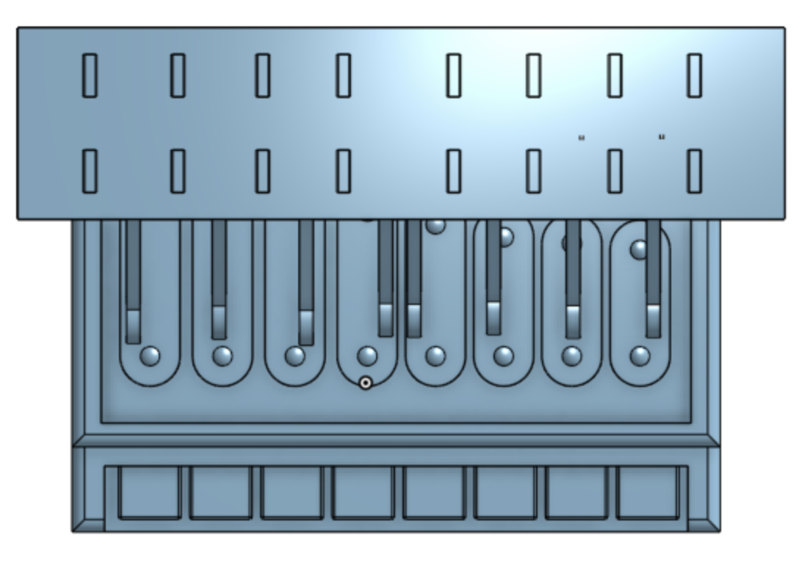
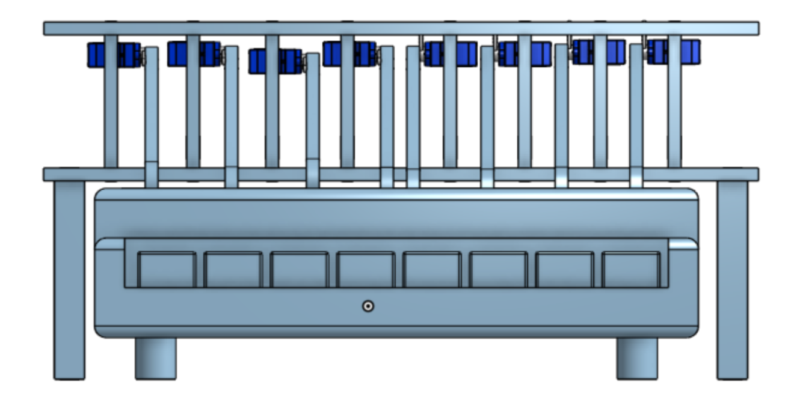
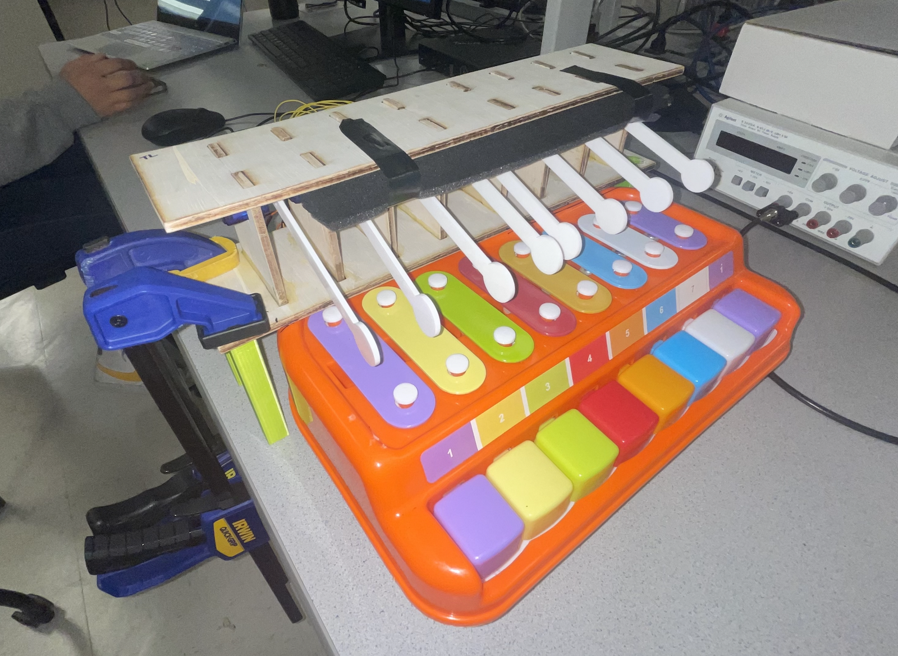
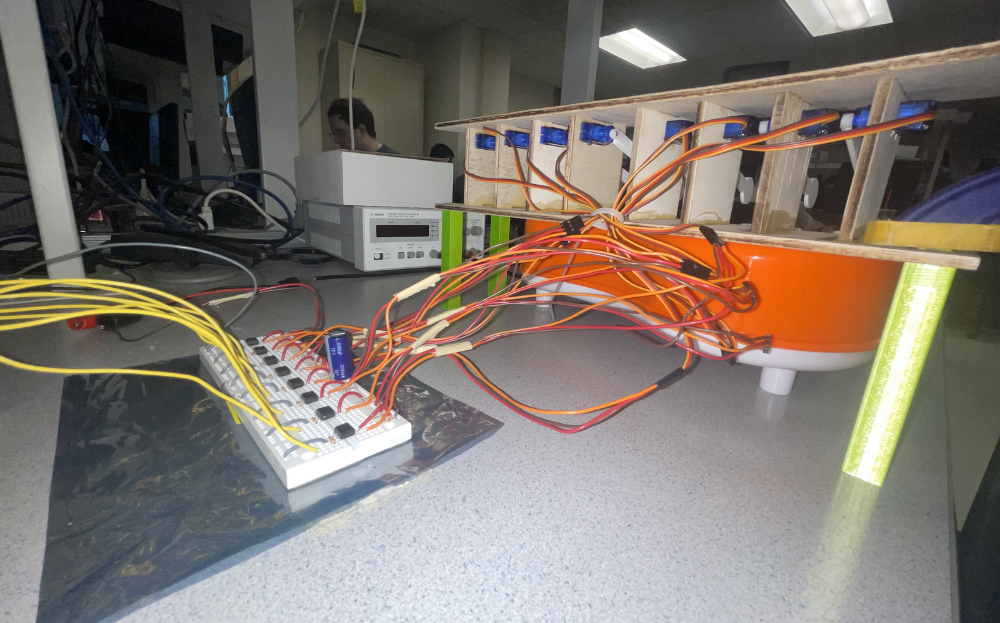
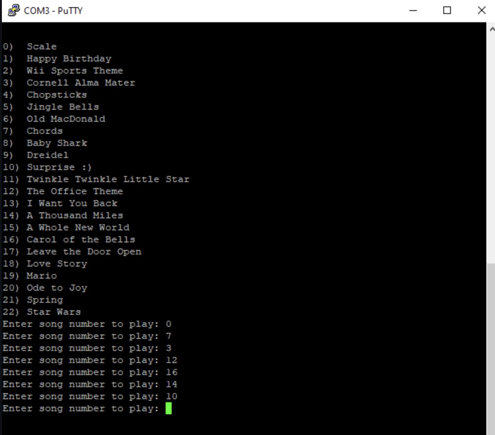

Rationale and Sources of Project Idea
Our project is motivated by our group’s passion for music and desire to make use of a xylophone that was leftover from a previous extracurricular project. Our project takes inspiration from:
1. The serial input code from previous labs (Hunter-Adams-RP2040-Demos/Lab_2/Animation_Demo/)
2. Motor control and PWM signal output from previous labs (e.g. Lab 3)
Logical Structure
Each of the eight servos are inserted into custom laser cut wooden servo mounts, and 3D printed lego parts raise the servo mount platform to sit nicely on top of the xylophone. Custom laser cut acrylic xylophone mallets were adhered to the shaft of each of the servos using super glue. The CAD assembly and final prototype of the structure is pictured below. Not pictured in the design is the foam padding added to the top of the servo mount platform during testing, which was used as a mechanical damping mechanism in the event that some of the servo motors began to slightly jitter.



Figure 1. CAD design for mechanical structure of servo mounts and xylophone mallets


Figure 2. Final mechanical structure of servo mounts and xylophone mallets
Upon the start of the program, the serial monitor will prompt the user to choose a song and output all the choices in the song bank. The program will print the following:

Figure 3. Song selection prompt in serial monitor
Once the user indicates their desired song by inputting its corresponding number, the program sets the pointer of the current song to point to a struct where that song’s data is stored. The data includes an array of “notes” for the song, which contains eight arrays of 1s and 0s that each tells a servo when it should hit its respective key.
A song’s “beat period” is also included in its data and is updated in the program to set the length of one beat, which ultimately also sets the tempo of the song. Every beat, the program will index each servo’s array by the current beat number to check if the servo should strike down at that time.
This continues until the end of the song, which is specified through the “end beat” value of each specific song’s data as well. After a song has finished playing, the user can choose another number to enter into the serial monitor to play another song.
Hardware Trade offs
During the ideation phase of our project, we debated whether servo motors or solenoids were more suitable for our project. Although it is less costly, a large external mechanical structure is needed to mount the servos - which may lower the presentation quality of the final prototype - and attachments between the servo horns and the xylophone mallets may present a challenge. Unlike the servos, solenoids valves could be integrated inside the xylophone toy and hit the xylophone keys from below, making faster songs more possible. We ultimately decided to use servo motors with xylophone mallets adhered to the servo horns because of the various noises that solenoid valves can produce (e.g. loud banging, buzzing), which could interfere with the users’ musical experience.
Existing Patents & Copyrights
In terms of copyright and trademarks relevant to our project, our project does include original arrangements of songs such as “Leave the Door Open” by Anderson .Paak, Bruno Mars, and Silk Sonic, the Wii Sports Theme Song, and more. Reproduction of copyrighted music in an original format (“cover”) is covered under the Fair Use doctrine of US copyright law as this project is for educational purposes. All reproductions will cite the original song author. Pure copies of original protected work will not be shared.